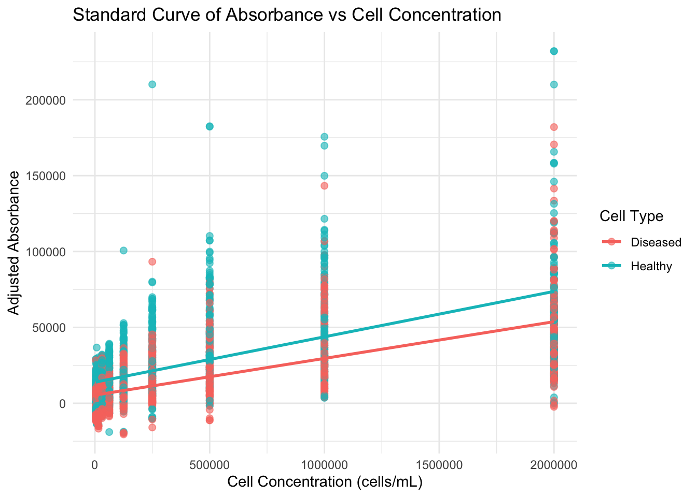
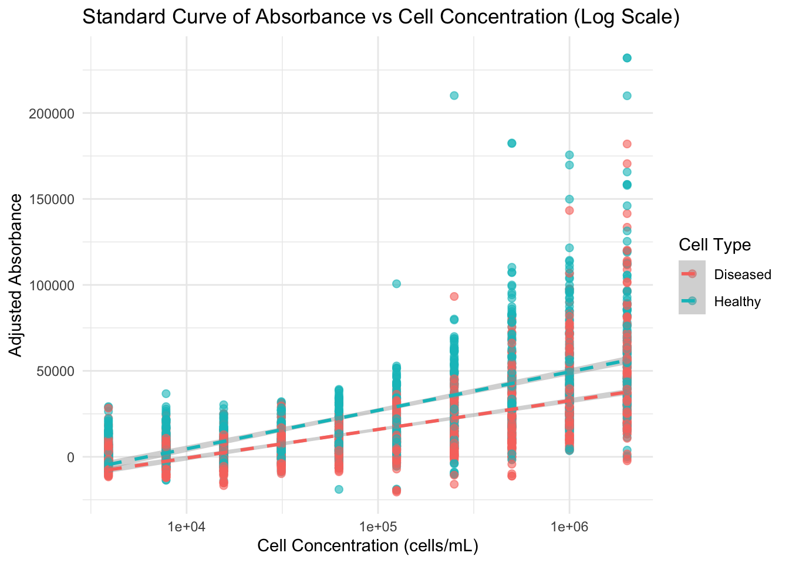

#Just a poor empty chunk with no codeDry Prac 1 — Data analysis in R
Introduction and Welcome to R!
In this dry prac, we will learn how to use the ggplot2 and tidyverse packages to create publication-quality bar and scatter plots from the data you generated in Wet Lab 1 & 2. Along the way, we will practice data manipulation, such as removing background absorbance and reshaping data for analysis.
R is a powerful tool for analyzing data, creating visualizations, and performing statistical tests. In cell biology, you can use R to analyze experimental results, such as cell growth rates, gene expression levels, or protein abundance.
Let’s dive into the basics of R, starting with something fun: exploring cells and their data!
ACTION REQUIRED
Open R studio on your computer and create a new r script for this class. If you are confused about how to do this refer to the introduction section of the BIOL340 practical website.
Class Objectives
- Understand the basics of R including importing data, basic data manipulation, and generating simple plots.
- Use R to generate Boxplots and Scatter plots of large datasets generated in your Wet Labs.
- Learn to write simple custom lines of R code and utilize generative AI to improve code and correct errors.
- Understand the differences between analysis in Microsoft Excel and R, and appreciate situations in which each tool is most useful.
- Assess and compare cell viability between ‘diseased’ and ‘healthy’ populations, evaluating the sensitivity and characteristics of each of the microplate assays you completed in Wet Lab
How to Read This Guide
In the instructions below, there will be chunks of code for you to read and copy into RStudio. The code chunks look like this:
Anything following a # in an R code chunk is a comment, which means R will ignore it. These comments are there to help explain what the code is doing.
We encourage you to copy and paste the code we provide in these blocks into R studio on your computer.
Getting Started
Why R?
R is like the mitochondria of data analysis—it’s the powerhouse! It can:
- Analyze large datasets (like transcriptomics data).
- Create stunning visualizations (like protein localization heatmaps).
- Perform complex statistical tests (like comparing cell survival rates).
- Automate repetitive tasks for better reproducibility.
How to Write Code in R
You write commands (called functions) in the console or a script in RStudio. Below each code chunk, there may be output (often preceded by # if you’re looking at raw code). Let’s start with a simple one.
Try running this yourself in RStudio! You can either copy and paste the code below or type it out manually. I recommend copying for the rest of this guide as it will make it harder to make mistakes, spelling is very important with code as the computer will take everything you write very literally.
We can then run this code using the run button in the top right corner.

Or by pressing control + enter on your keyboard.
When you run this code in R, you should see the result, 4, printed beneath.
# This calculates a simple sum
2 + 2[1] 4If you get 4, you’ve written and executed your first piece of R code. Now things get exciting.
Test your understanding
Can you use any other mathematical symbols here? Test it out.
Working with Variables
Variables are like labeled containers for your data. These are important because we can use them to store all sorts of things in R. Lets store our calculation as the variable calc we do this by writing out the variable name, then using a <- symbol then typing what we want to store. Copy the below and test it out for yourself.
We can also check what is stored in a variable by just typing its name and running the code. Let’s write calc again and see what we have stored. :
Test your understanding
Spelling and capitalization are really important. If we captilise the “C” in calc what will happen?
# Size of the nucleus
calc <- 2 + 2 # in micrometers
calc[1] 4It’s also possible to store a list of things as a variable. We do this by writing out the list proceeded by a ‘c’ (for combine), and then seperate every value with a comma. As in the below where we store a list of cool bugs. Because we are using words here(or strings in computer talk) we will use quotations so the computer knows we want it to store exactly the letters we provide it.
You’ll notice that i do not use a space between the words ‘cool’ and ‘bugs’, in general spaces are not read well by your computer, it doesn’t know what to do with them and it will cause your code to fail.
It is best practice to never use spaces in any of your file names or code if possible.
#List Nik's favourite bugs
cool_bugs<- c('flies', 'katydids', 'beetles')
#if we list the variable again remeber it will tell us what it contains.
cool_bugs[1] "flies" "katydids" "beetles"
Test your understanding
Add in two of your favorite bugs into the cool_bugs variable. Then run it to make sure it works.
Fun with functions
Functions are one of the most powerful tools in R. They allow us to perform tasks without having to write the same code over and over. A function takes an input, does something with it, and then gives back an output. You’ve already used one function without realizing it— +, which is the addition function!
For example, let’s use the function sqrt() to calculate the square root of our calc variable.
sqrt(calc) # This finds the square root of 4[1] 2Many functions take arguments that you can customize. For example, the round() function rounds numbers to a specified number of decimal places:
round(3.14159, digits = 2) # Rounds to 2 decimal places[1] 3.14We will use a lot of different functions to do powerful things in our data analysis!
Test your understanding
Calculate the square root of your calc variable then round it to 4 decimal places.
Visualizing Data and Installing and Loading Packages
R can make many types of plots. Let’s plot our nucleus sizes using ggplot2, which is included in the tidyverse.
If you haven’t installed the tidyverse package yet, you can do so via copying and running:
install.packages("tidyverse")We also have to load the library by copying and running this line of code:
library(tidyverse) # Loads ggplot2, dplyr, tidyr, and moreWe are now set up to start looking at our data from Wet Lab 1
Visualizing Cell Counts and Concentration from Wet Lab 1
In Wet Practical 1, you determined cell concentration and the number of live and dead cells for healthy and diseased samples.
We can now import this data for the entire class and visualize it using ggplot2. Remember, working directories are important in R.
Remember for this class it’s not important to understand everything that is happening in the code, just to be able to run it and use Gen AI to edit it.
Action required
Copy the below code and change the location of the file in the read.csv function to where you file is stored on your computer. Remember we keep the text in quotations so the computer interprets it literally as what we type.
# Example: Setting working directory
# e.g. for pc: setwd("C:/Users/.../Biol340_981/2025/Practicals/Dry_Pracs")
# Load your data using read.csv e.g. from a mac:
Class_data <- read.csv("~/Library/CloudStorage/OneDrive-Personal/Research/Teaching/Biol340_981/2025/Practicals and Prac manual/Dry practicals/DP_1_data_analysis/cell_count_data.csv")
head(Class_data) group treatment raw_counts cell_concentration X20ul_cell_number
1 G1_G2 healthy, alive 94.5 1890000 37800
2 G1_G2 healthy, dead 4.5 90000 1800
3 G1_G2 disease, alive 94.25 1885000 37700
4 G3_G4 healthy, alive 47 940000 18800
5 G3_G4 healthy, dead 1.25 25000 500
6 G3_G4 disease, alive 107.75 2155000 43100
proportion_total_cells
1 95.24
2 4.76
3 100
4 97.4
5 2.6
6 96.4If you are curious the functions in the above code chunk do the following: - setwd() sets your working directory. - read.csv() imports a CSV file. - mutate() modifies or adds columns. - head(Class_data) prints the first 6 rows, so you can quickly inspect your dataset.
Making a Boxplot
Now we can analyse this data in interesting ways using ggplot2 a package specifically for graphing included in tidyverse. Feel free to play around with labels, colours and themes.
A boxplot helps compare data distributions across categories.
The below packge function ggplot() required a few things first we give it our data variable also known as the data frame ggplot(Class_data). Then we need to tell it what we actually want plotted from this data set, or the asthetics of the graph, this is shortened to list aes(), i.e. ggplot(Class_data, aes(x = x-axis, y = y axis). In the below we also tell it to treat the column cell_concentration in our data as a numeric factor this just means it will plot it correctly.
We also will add a geom to our plot, this is short for a geometric object - which basically means dots, lines, curves or any other thing we might like to plot. For now we will add a boxplot geom using geom_boxplot. >Data scientists are not very creative when it comes to naming things, but this means with a bit of thinking, googling or AI searching we can pretty quickly work out what a function or option is doing.
p <- ggplot(Class_data, aes(x = treatment, y = as.numeric(cell_concentration))) +
geom_boxplot() +
theme_minimal()
p
Test your understanding
If you are curious, try changing the aesthetics for the y axis to just be y = cell_concentration to see how it tries to plot the data. What is going on?
We can also tidy up this graph and improve how it looks by using options under labels() which allows us to add axes and figure labels. We can also use theme() which allows us to manipulate different visuals in the graph, in this instance I will use theme_minimal which is a theme included with ggplot, but there are a huge number of customisations you can do by manipulating options within theme(). Observe the below changes.
#coloured boxplot
p <- ggplot(Class_data, aes(x = treatment, y = as.numeric(cell_concentration), color = treatment)) +
geom_boxplot() +
labs(
title = "Concentration of viable vs. treatment",
x = "treatment",
y = "Cell concentration"
) +
theme_minimal()
# Display the plot
p
Question 1
What changed between the first and second box plots you created? How is this reflected in the code?
Activity 1
Make a custom graph with interesting aesthetics. Use generative AI (e.g., ChatGPT or Copilot) to get ideas on what to change (colors, theme, legend placement, etc.). You can copy and paste your code into co-pilot and chatGTP and ask for it to change things based on what you would like to see.
Graphing Wet Lab 2 Microplate Data in R
Prior to this dry lab we have run through the data analysis in Excel, we are now going to try importing the data into R and graphing using the skills you have developed in ggplot2
Question 2
Reflect: What do you think a barrier to analysis the Excel processed data in R will be? What do you think the advantages of using R could be?
Thinking outside the cell, reading and formatting your data
So far you have been working with your data in cells, using the tools available in Excel and the tables provided in your prac manual. When it comes to importing data into R we have to think a little differently as we no longer work with the data visually using a Graphical User Interface (i.e. a GUI).
ACTION REQUIRED
First we need to convert our excel data from a spreadsheet (or .xls) file to a comma seperated text file (or csv.).
Open the class data from wetlab 2 and open it in Excel. You can now use save as in Excel and choose the option to save as a comma separated file.
This should save your data with the file extension .csv. Now open the data in Visual Studio Code on your computer, you will see that all our ‘nice’ formatting we did to make the data easier to understand actually makes it very confusing for the computer to interpret what each data point means.
We need to simplify things so that the software can distinguish between our different variables.
I.e. we need to make it clear what each cell represents in terms of treatment, cell concentration and absorbance. We should also remove our background from our absorbance as well.
The easiest way to do this is to make each of these variables the headings of the columns in your data, then input the information for each data point. This is also sometimes referred to as “long format” data. For todays dry prac, we have done this for you.
ACTION REQUIRED
Download the plate data .csv filea for both assays from moodle. This data has already been formatted into “long format” for you.
Open the data for both assays in R and store them as seperate variables using the code below. Remember to change the location in read.csv() to where the file is stored on your computer.
plate_data_cAM <- read.csv("~/Library/CloudStorage/OneDrive-Personal/Research/Teaching/Biol340_981/2025/Practicals and Prac manual/Dry practicals/DP_1_data_analysis/corrected_class_data_cAM.csv", row.names = 1, check.names = FALSE)
plate_data_MTS <- read.csv("~/Library/CloudStorage/OneDrive-Personal/Research/Teaching/Biol340_981/2025/Practicals and Prac manual/Dry practicals/DP_1_data_analysis/corrected_class_data_MTS.csv", row.names = 1, check.names = FALSE)
head(plate_data_cAM) Well Absorbance Cell_Type Dilution
1 A1 45634.083 Healthy 2000000
2 A2 27520.083 Healthy 1000000
3 A3 15916.083 Healthy 500000
4 A4 13197.083 Healthy 250000
5 A5 9155.083 Healthy 125000
6 A6 6470.083 Healthy 62500head(plate_data_MTS) Well Absorbance Cell_Type Dilution GROUP ID
1 A1 2.49175 Healthy 2000000 G1 & G2
2 A2 1.96275 Healthy 1000000 G1 & G2
3 A3 1.23175 Healthy 500000 G1 & G2
4 A4 0.81075 Healthy 250000 G1 & G2
5 A5 0.26875 Healthy 125000 G1 & G2
6 A6 0.14275 Healthy 62500 G1 & G2Question 3
What can you notice is different between how your data was formatted in excel compared to the data we have prepared for you to import into R? Why might this be important.
Plotting the Results
Now lets make a different type of plot. Let’s create a scatter plot of *the calcein-AM using ggplot2 to visualize how Adjusted Absorbance changes with Cell Concentration.
In the below plot: - geom_point() adds scatter plot points. - labs() adds titles and axis labels. - theme_minimal() is a clean, modern theme that removes a lot of unnecessary formating.
Note
You will notice that we have some options within geom_point() play around with them and see what happens. Why not check other options you could include here by googling or asking AI. You can do some pretty crazy things with custom points or by using jitter.
# Scatter plot of Adjusted Absorbance vs. Dilution
# Colored by Cell_Type
ggplot(plate_data_cAM, aes(x = Dilution, y = Absorbance)) +
geom_point(alpha = 0.6, size = 2) +
labs(
title = "Standard Curve of Absorbance vs Cell Concentration",
x = "Cell Concentration (cells/mL)",
y = "Adjusted Absorbance",
color = "Cell Type"
) +
theme_minimal()
Our plot now has points! But it would also be great to colour by the cell line type.
ACTION REQUIRED
Based on the code you made for boxplots above, how would you colour the data in this plot by cell type?
Adding a trendline
Our plot could also be improved by adding in a trendline to visualise the data. We can do this using the function geom_smooth(). Here we are going to apply a linear model or ‘lm’ as our method because we want a straight line. We will also set the option se or standard error to = FALSE
# Scatter plot of Adjusted Absorbance vs. Dilution
# Colored by Cell_Type
ggplot(plate_data_cAM, aes(x = Dilution, y = Absorbance, color = Cell_Type)) +
geom_point(alpha = 0.6, size = 2) +
geom_smooth(method ='lm', se = FALSE) +
labs(
title = "Standard Curve of Absorbance vs Cell Concentration",
x = "Cell Concentration (cells/mL)",
y = "Adjusted Absorbance",
color = "Cell Type"
) +
theme_minimal()
Test your understanding
Have a look (using google or AI) at some of the other types of methods you can use to add a line geom to your plots. One to get you started is method = "loess"
Log Scale Example
Our plot looks pretty squashed in the left hand side (lower concentrations). Let’s fix that by making it a log graph. This is very easy to do!
ACTION REQUIRED
Let’s add in a lione of code for scale_x_log10(). Don’t forget to put a + at the end so that the computer reads it as part of you graph function. You will notice I also changed the geom for the line below to dashed, because why not. Feel free to change it back or look at other options.
ggplot(plate_data_cAM, aes(x = Dilution, y = Absorbance, color = Cell_Type)) +
geom_point(alpha = 0.6, size = 2) +
geom_smooth(method = "lm", se = TRUE, linetype = "dashed") +
scale_x_log10() +
labs(
title = "Standard Curve of Absorbance vs Cell Concentration (Log Scale)",
x = "Cell Concentration (cells/mL)",
y = "Adjusted Absorbance",
color = "Cell Type"
) +
theme_minimal()
Estimating the Linear Range
We can also further improve our standard curves by finding the linear portion of the trendline to determine the sensitivity range of the assays. Let’s do this by filtering our data for specific dilutions using the function filter().
ACTION REQUIRED
Copy the below code and change the filtering range to something suitable for your data.
linear_data_cAM <- plate_data_cAM %>%
filter(Dilution >= 1000 & Dilution <= 500000)Now let’s try reploting our graph using the new linear_data_cAM variable.
# Plot linear region
ggplot(linear_data_cAM, aes(x = Dilution, y = Absorbance, color = Cell_Type)) +
geom_point(alpha = 0.6, size = 2) +
geom_smooth(method = "lm", se = FALSE) +
labs(
title = "Linear Region of Standard Curve",
x = "Cell Concentration (cells/mL)",
y = "Adjusted Absorbance",
color = "Cell Type"
) +
theme_minimal()
Activity 2
Customize your plot to improve its appearance. - Adjust point size and color - Modify or remove legends - Evaluate whether you need to show all data labels or tick marks - Explore other themes (e.g.,
theme_bw(),theme_classic()). Feel free to look at the ggplot2 cheat sheet available on the dry prac website, we have also provided extra information for plotting under “extra help with graphics”
Activity 3
Repeat this plot for the MTS dataset. This should be simple as you will only need to change what variable is plotted by code you already have! The code should remain the same. This is one powerful aspect of R, reproducibility!
Exporting Plots
In RStudio, use the Plots pane (bottom-right) and click Export to save your plots as an image (PNG, JPEG) or PDF. You can also programmatically export using ggsave().
Example:
ggsave("myplot.png", plot = p, width = 6, height = 4)Activity 4
Export your final R-generated figures for the MTS and Calcein-AM assays as PNG files. Try setting the file dimensions to 600×400.
Question 4
Where do these files save on your computer? Why is that location used?
Question 5
Write a brief comparison of the two assays you performed. Which was faster, more reproducible, or more sensitive?
Common Errors and How to Fix Them
Some commonly encountered errors include:
- Package not found → Make sure you’ve installed and loaded the package.
- Object not found → Check for typos in function or variable names.
- Incorrect file path → Check for typos in the file path. Make sure you have set the correct working directory.
- Mismatched column names → R is case-sensitive.
Conclusion
In this Dry Practical, we:
- Learned how to import and analyse data in both Excel and R.
- Learnt how to generate box and scatter plots in R
- Constructed standard curves in Excel and R.
- Determined the linear range using regression.
- Calculated cell viability for diseased vs. healthy cells.